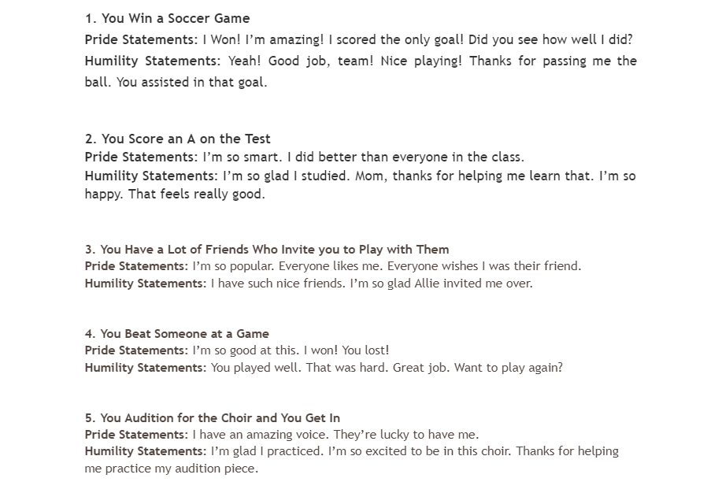

What is Humility?
- “My conception of humility is what you have when you give up certain self-aggrandizing thought patterns, reflexes, and behaviors.”- Ph.D. Karl Albrecht Ph.D
- “Some philosophers historically have not been impressed with humility”- Ph.D. Michael W. Austin
- Humble people are better able to cope with anxiety about their mortality.
Excellence in leadership
- Humble leaders are not only better liked, as you might imagine, but they are also more effective.
- Author of a study published in the Academy of Management Journal, Bradley Owens explained (Owens et al., 2011):
“Leaders of all ranks view admitting mistakes, spotlighting follower strengths and modeling teachability as being at the core of humble leadership.
And they view these three behaviors as being powerful predictors of their own as well as the organization’s growth.”
Higher self-control
- Having high self-control is one key to a successful life.
- Oddly, perhaps, studies have found that an obsession with the self can paradoxically lead to lower self-control.
- The humble, though, because they place less importance on the self, exhibit higher self-control in many situations.
Perhaps this is partly due to the fact that humble people tend to know their limits.
Better work performance
- The humble not only make better managers, but they also make better employees.
- A study of employees’ supervisors found that being honest and humble was a good predictor of people’s job performance (Megan et al., 2011).
Higher grades
- Perhaps being a better employee and better manager has its roots in the formative years.
- A study of 55 students has found that those who were more humble did better academically (Rowatt et al., 2006).
Less prejudice
- One of the characteristics of being humble is having a low sense of entitlement.
- Humble people don’t think they are owed things.
- This leads to a less prejudiced view of the world, encouraging them to be tolerant of others and less defensive about their own beliefs.
More helpful
- Humble people are, on average, more helpful than people who are conceited or egotistical.
- In a study by LaBouff et al. (2011), participants who were more humble, were more likely to offer help, and offered more of their time, to those in need.
Unsurprisingly, humble people have also been found to be more generous.
Better relationships
- Humble people may have better relationships because they accept other people for who they are.
- A study by Davis et al. (2012) of groups of people found that humility helped to repair relationships and built stronger bonds between people.
Humility Activity
Everyone will choose a partner. One person will be the person full of pride and the other will be the person that responds with Humility. This activities purpose is to help a student understand and experience humility.
